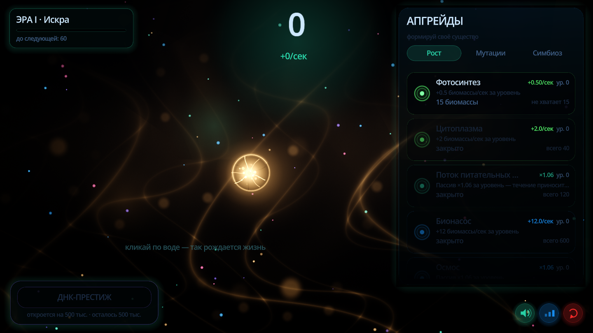
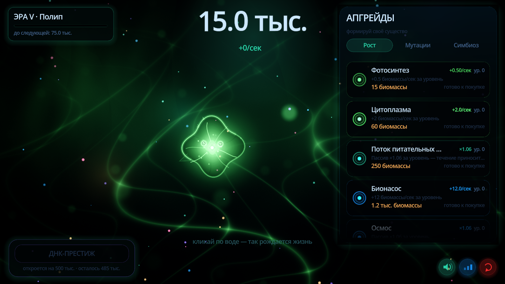
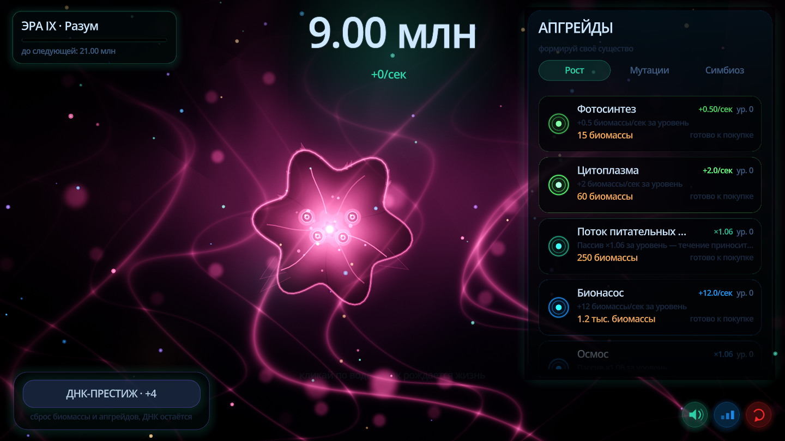
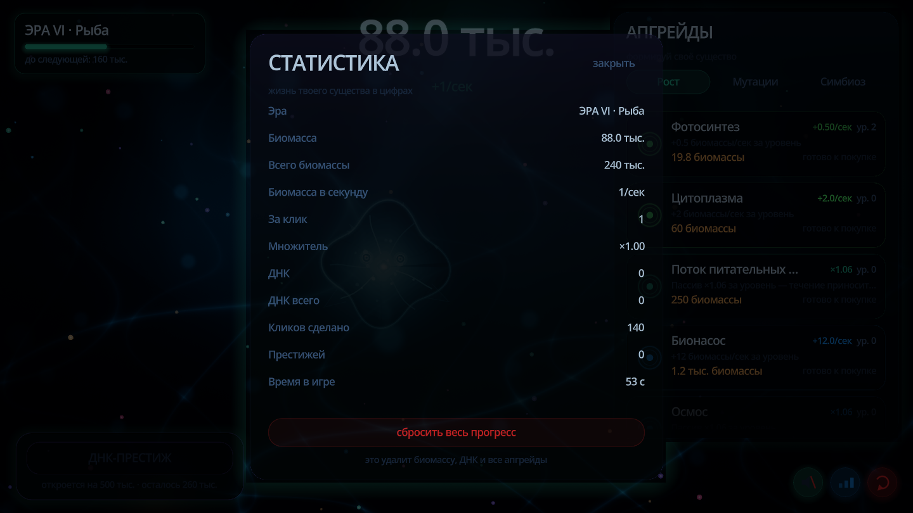

Расслабляющая 2D-инкременталка: вы растите биолюминесцентную жизнь в тёмном океане — от первой искры до разумного сверхорганизма. Всё процедурное: фон, существо, звук, интерфейс.

Всплеск биомассы. Сила клика растёт от ДНК и апгрейдов; клик всегда остаётся осмысленным.
Четыре вкладки — Рост, Мутации, Симбиоз, ДНК. Карточка сама говорит: готово к покупке, не хватает N, закрыто.
Каждый порог — баннер «НОВАЯ ЭРА»: существо перестраивается за 2 секунды, меняется палитра океана и аккорд эмбиента.
Сброс прогресса за ДНК: floor(sqrt(total / 500 000)). Каждая ДНК навсегда даёт +15% к производству.
50% скорости за время отсутствия, максимум 8 часов. При возврате — тост с накопленным.
Каждые 15 секунд, плюс сохранение при выходе. Ничего не теряется.


